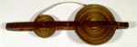

I La Caligo. (Fragment.) Boeginees. Handschrift op lontarpalmblad, aaneengenaaide stroken van circa 20 x 600-800 mm, gerold om een as. Buitenmaten van het object: 270 x 680 mm. Celebes, begin twintigste eeuw. -- (Or. 5475)
Het epos I La Caligo, afkomstig van het eiland Celebes, is waarschijnlijk het grootste epos ter wereld: het bevat vele tienduizenden verzen. Het werk is niet aan het brein van één auteur ontsproten, maar is in de loop der tijden gegroeid en het produkt van de literaire fantasie van een groot aantal mensen. Het is een cyclus van een in systeem gebrachte en literair uitgewerkte mythologie, waarvan delen afzonderlijk in omloop zijn. Bij gelegenheid van feesten werden delen van het gedicht gereciteerd.
Het hier getoonde handschrift is vervaardigd uit palmblad, dat in heel Zuid- en Zuidoost-Azië een veelgebruikt schrijfmateriaal is. De wijze waarop het palmblad hier is gebruikt is opmerkelijk. Lange stroken zijn aaneengenaaid, en vervolgens om een as gewikkeld. Omwikkelen naar de andere as van het frame laat de tekst voorbij komen, zodat deze gelezen kan worden. Er is slechts een enkele regel tekst. Het blokje tussen de twee rollen is niet oorspronkelijk. Dit is aangebracht om de twee helften van het frame, dat bij het transport naar Nederland in, of kort voor, 1906 in tweeën was gezaagd, bijeen te houden. Het handschrift is waarschijnlijk niet veel ouder dan dat jaar.
Literatuur
- R.A. Kern, I La Caligo. Catalogus der Boegineesche, tot den I La Caligo-cyclus behoorende handschriften, bewaard in het Legatum Warnerianum te Leiden alsmede in andere Europeesche bibliotheken. Leiden 1939, p. 1-20, 580-583, 655.
| vorige pagina | top pagina |